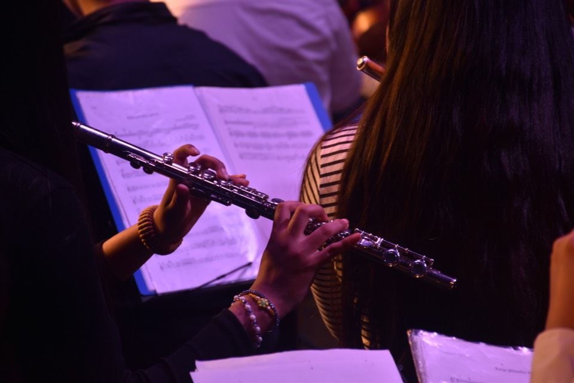
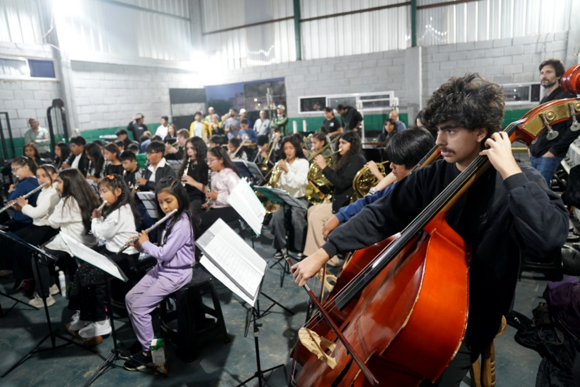
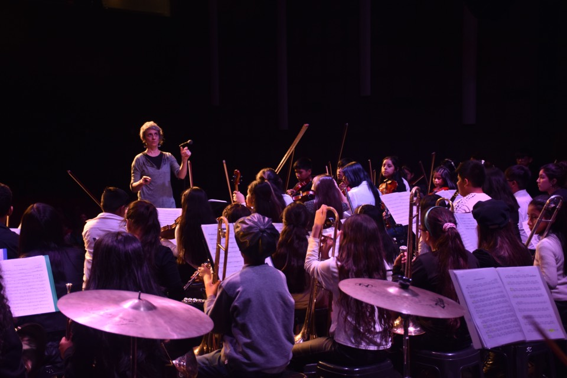

Teatro El Plata
Crónica, imágenes y registros de una presentación importante para la historia reciente de la orquesta.
Abrir concierto
Polideportivo Nueva Chicago
Una noche de barrio, cultura y comunidad con la orquesta ocupando un espacio emblemático de Mataderos.
Abrir concierto
Museo de Arte Moderno
Una experiencia donde la música convivió con el arte y amplió la presencia de la orquesta fuera del barrio.
Página pendiente
Cierre en la Escuela Nº 19
Concierto, escuela, familias y comunidad reunidas en un mismo cierre de año.
Abrir concierto
Temporada 2026
Próxima parada: Escuela Nº 19 Eva Duarte
El 16 de marzo comienza una nueva gira de la orquesta por el barrio. Desde acá también vas a poder seguir ese nuevo recorrido.
Ir al próximo concierto